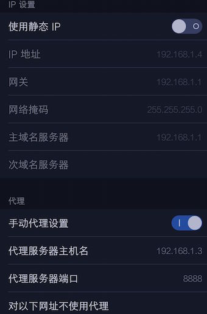
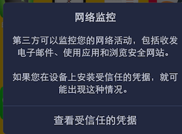

mac下使用Charles爬取安卓app数据
原本是想玩Fiddler的,但是得安装虚拟机太麻烦,其他的如tcpdump,wireshark等,依据个人喜好而用。
一, HTTP包：
1. 安装抓包工具 Charles , 下载
破解:应用程序->显示包内容->Contents->Java->替换charles.jar，然后进入软件，此时显示30天试用，然后在菜单里面选注册，输入用户名和序列号：
Name:
http://ninjasaga.cheat.center
Serial:
18e69f6d5bc820d4d3
2. 配置手机代理
1,ifconfig查看mac ip地址
2,打开手机设置，进入当前wifi连接，设置代理为手动，将服务器填为上一步中获得的IP，端口默认为8888（在charles的proxy setting中可以改这个端口号）。这时Charles弹出确认框，点击Allow按钮即可


3.中文乱码问题解决
在应用程序文件夹找到Charles.app，选择显示包内容, 在charles的content/info.plist 中添加-Dfile.encoding=UTF-8

<?xml version="1.0" ?>
<!DOCTYPE plist PUBLIC "-//Apple//DTD PLIST 1.0//EN" "http://www.apple.com/DTDs/PropertyList-1.0.dtd">
<plist version="1.0">
<dict>
<key>CFBundleDevelopmentRegion</key>
<string>English</string>
<key>CFBundleExecutable</key>
<string>Charles</string>
<key>CFBundleIconFile</key>
<string>charles.icns</string>
<key>CFBundleIdentifier</key>
<string>com.xk72.Charles</string>
<key>CFBundleDisplayName</key>
<string>Charles</string>
<key>CFBundleInfoDictionaryVersion</key>
<string>6.0</string>
<key>CFBundleName</key>
<string>Charles</string>
<key>CFBundlePackageType</key>
<string>APPL</string>
<key>CFBundleShortVersionString</key>
<string>3.11.4</string>
<key>CFBundleVersion</key>
<string>3.11.4</string>
<key>CFBundleSignature</key>
<string>Chls</string>
<key>NSHumanReadableCopyright</key>
<string>Charles Web Debugging Proxy http://charlesproxy.com/</string>
<key>LSApplicationCategoryType</key>
<string>public.app-category.developer-tools</string>
<key>NSHighResolutionCapable</key>
<true/>
<key>NSSupportsAutomaticGraphicsSwitching</key>
<true/>
<key>IgnorePSN</key>
<true/>
<key>JVMRuntime</key>
<string>jdk1.8.0_74.jdk</string>
<key>JVMVersion</key>
<string>1.7</string>
<key>JVMMainClassName</key>
<string>com.xk72.charles.macosx.gui.Main</string>
<key>CFBundleDocumentTypes</key>
<array>
<dict>
<key>CFBundleTypeExtensions</key>
<array>
<string>chls</string>
</array>
<key>CFBundleTypeIconFile</key>
<string>charles_session</string>
<key>CFBundleTypeName</key>
<string>Charles saved session</string>
<key>CFBundleTypeRole</key>
<string>Editor</string>
<key>LSTypeIsPackage</key>
<false/></dict>
<dict>
<key>CFBundleTypeExtensions</key>
<array>
<string>amf</string>
<string>amf0</string>
<string>amf3</string>
</array>
<key>CFBundleTypeIconFile</key>
<string>charles_amf</string>
<key>CFBundleTypeName</key>
<string>Charles AMF dump</string>
<key>CFBundleTypeRole</key>
<string>Editor</string>
<key>LSTypeIsPackage</key>
<false/></dict>
<dict>
<key>CFBundleTypeExtensions</key>
<array>
<string>har</string>
</array>
<key>CFBundleTypeIconFile</key>
<string>charles_session</string>
<key>CFBundleTypeName</key>
<string>Charles HAR session</string>
<key>CFBundleTypeRole</key>
<string>Editor</string>
<key>LSTypeIsPackage</key>
<false/></dict>
</array>
<key>LSArchitecturePriority</key>
<array>
<string>x86_64</string>
</array>
<key>LSEnvironment</key>
<dict>
<key>LC_CTYPE</key>
<string>UTF-8</string>
</dict>
<key>JVMOptions</key>
<array>
<string>-Dfile.encoding=UTF-8</string>
<string>-Dcom.apple.mrj.application.live-resize=true</string>
<string>-Dapple.laf.useScreenMenuBar=true</string>
<string>-Dcom.apple.macos.useScreenMenuBar=true</string>
<string>-Dapple.mrj.application.growbox.intrudes=true</string>
<string>-Dcom.apple.hwaccel=true</string>
<string>-Dswing.aatext=true</string>
<string>-Dapple.awt.graphics.UseQuartz=true</string>
<string>-Dcharles.config=~/Library/Preferences/com.xk72.charles.config</string>
<string>-Dcharles.data=~/Library/Application Support/Charles/</string>
<string>-Dcharles.home=$APP_ROOT/Contents</string>
<string>-Xdock:icon=$APP_ROOT/Contents/Resources/charles.icns</string>
<string>-Xdock:name=Charles</string>
<string>-Dcom.apple.mrj.application.apple.menu.about.name=Charles</string>
<string>-Xbootclasspath/p:$APP_ROOT/Contents/Java/charles-sni-patch-1.0.jar</string>
</array>
<key>JVMDefaultOptions</key>
<dict>
</dict>
<key>JVMArguments</key>
<array>
</array>
</dict>
</plist>
HTTPS抓包:
- 下载Charles证书http://www.charlesproxy.com/assets/legacy-ssl/charles.crt ,导入到手机中,点击证书命名即可,点击查看受信任的凭据,在用户选项卡可以看见证书
- 在Charles的工具栏上点击Proxy；选择SSL Proxying Settings… 切换到SSL选项卡，选中Enable SSL Proxying，选项卡的Locations表单可以填写要抓包的域名和端口，点击Add按钮，在弹出的表单中Host填写域名，比如填api.instagram.com，Port填443。如果不填直接确定则为＊表示匹配所有
接下来就可以随意玩耍了😄
可以使用该工具方便开发,不要干坏事哦~～
blog comments powered by Disqus